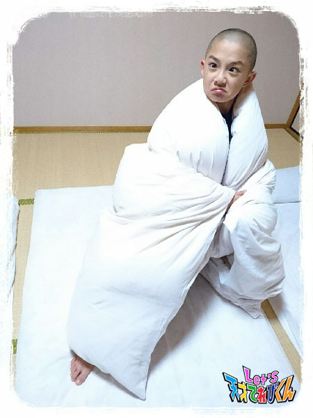

<<2016年10月 | トップページ | 2016年12月>>
2016年11月
雪の思い出［瀧澤翼］
こんにちは。
瀧澤翼です！
11月５日、『 NHK文化祭 』で天てれの特別ミッションに応募、参加してくれた方々
本当にありがとうございました ＼(^o^)／
見にきてくれた方は、楽しめましたか？
見にこれなかった方も、またイベントがあるときは、ぜひ応募してくださいね！

最近は、すっかり寒くなっちゃいましたね (>_<)
学校へ行くときはネックウォーマーが欠かせません笑
そして、この季節で楽しみなのが・・・
雪です！！
雪ってきれいなだけじゃなく、雪だるまを作ったり
雪合戦や、スキー、スノーボードで遊んだりするのが楽しいですよね。
と、いうわけで今回のテーマは、「 雪の思い出 」です！
１年半くらい前の中学校入学式の日、
家を出ると雪がちらほら降っていました。
雪が降る入学式は
なぜか僕の気持ちを落ち着かせてくれて、
「 良い中学校生活が送れそうだなぁ 」って思いました。
寒すぎて入学式の記念写真を撮り忘れてしまいましたが・・・笑
でも、とても忘れられない入学式になりました。
僕が中学校卒業するときにも
季節外れの雪が降ってくれるかなぁ。
Let's snow！
投稿者:瀧澤翼 | 投稿時間:18時45分 | カテゴリ：てれび戦士 | 固定リンク
雪の思い出［黒川桃花］
皆さんこんにちは！黒川桃花です！
この前、『 NHK文化祭 』に行ってきました！
てれび戦士のめいちゃんと一緒でしたよ (^.^)
『 Let's 天才てれびくん 』のコーナーでどちゃもんの缶バッジを作ったり、
てれび戦士のベストを着て写真をとったり（ ベストが小さかったけど(^_^;) ）
楽しかったです ＼(^o^)／
さて、
もうすっかり冬ですね！
実は私の家族は、全員冬生まれなんです！
パパ 11月
ママ 12月
私 12月
妹 12月
なんです！！！
だから冬は、
ケーキざんまいですーーーーー！！！！！
クリスマスケーキもあるし、、、
なので私も、テンションMaxですーーーー！！！！！！
さて！今回のお題は、「 雪の思い出 」です！！
雪の思い出か～
そういえば、何年か前に、大雪がありましたよね？
なかなか雪が降らないところなので、
私たち、テンションMaxで、大さわぎ！！
さっそくパパと妹と３段雪だるまを作りました！！
その後、大きなかまくらを作りました！
かまくらの中で食べたラーメン、あっつあつですごくおいしかったなぁ～
この冬も、またたくさん雪降ればいいな～
では。
投稿者:黒川桃花 | 投稿時間:18時45分 | カテゴリ：てれび戦士 | 固定リンク
雪の思い出［飯島緋梨］
こんにちは
飯島緋梨です！
学校の期末試験も終わり
いよいよ、１年最後の１ヵ月まで迫ろうとしています！！
もう12月になるなんて・・・
あっという間の１年だった？！
これからクリスマス、お正月と楽しいイベントがいっぱい *\(^o^)/*
さて！今回のお題は！
「 雪の思い出 」です！
私の雪の思い出は【 かまくらを作ったこと 】です！
大雪が降ったとき
いとこ達とかまくらを作ったり、ソリ遊びをしました *\(^o^)/*
かまくら作りは、積み上げて掘るのくり返しで大変だったけど、
できたときは、すごいうれしかったです！
なかに入ってみると真っ暗だけど暖かくて、
周りの音は何も聞こえなくて、秘密の家みたいでした！
なかでお菓子を食べたりして楽しかった～
ずっと残っていてほしいな？！
という思いも虚しく雪は溶けてしまいます・・・
このときは、それが本当にショックで悲しかったな～笑
だけど、雪がとけてなくなってしまっても、
かまくらを作った思い出は残っています！
寒くてもそんな雪が降る冬が私は大好きです！
この冬もたくさん雪が降るといいな
投稿者:飯島緋梨 | 投稿時間:18時45分 | カテゴリ：てれび戦士 | 固定リンク
雪の思い出［辻晴仁］
こんにちは、つじはるとです (*^^*)
この間、『 NHK文化祭 』がありました。
「 Let's 天才てれびくん 」のブースやステージショーにも、
たくさん遊びにきてくれて
とてもうれしかったです。ありがとう！！！
せんぱいの辻村くんと笹原くんをはじめ、
てれび戦士の仲間も
応えんにかけつけてくれました。
・・・・・・・・・・・・・・・・・・
さて、今回のテーマは、「 雪の思い出 」です。
冬生まれのぼくは、寒いのや、雪が大大大好き！
雪がふると、いつも大こうふんで、
いてもたってもいられなくなって、
犬みたいに外に飛び出します。
そして、雪の思い出は、
雪がっせんやスキー合宿やいろいろあるけど、
いちばんの思い出は、
２年前に近所に大雪がふったときに、
家の前の公園で、かまくらを作ったことです。
お父さんや、友達や、友達のお父さんとで、
力を合わせて作りました。
みんなで笑いながら、大はしゃぎしながら、
夢中で雪をほったりしていたら、
寒いはずなのに暑くなって、
汗をかいてしまうほどでした。
できあがったかまくらは、
１人やっと入れるぐらいの小さなもので、
小枝や石もまじっていたけれど、
できあがってすごくうれしかったなあ。
また雪の中で思いきりかけまわりたいな！！
では、またね(‘ω’)ノ
投稿者:辻晴仁 | 投稿時間:18時45分 | カテゴリ：てれび戦士 | 固定リンク
○○になってみたい！［柿澤仁誠］
今回のテーマは「 ○○になってみたい！ 」
ぼくは「 雲（ くも ） 」になってみたいなと思いました。
ぷかぷか～っと空にうかんで、気持ちよさそうです (*^.^*)
あと、いろんな形にもなれますよね！
小さい子がいたら、
どうぶつの形になってあげたら楽しんでくれるかも！
雲になったら、世界中いろいろな所へも行けちゃいます！
空から見る景色は、ぜんぜんちがうんだろうな～～ (*゜O゜*)
さいしょは、日本のおしろを空から見てみたいな！
気に入った場所があったら、雨になってふって行きたいです。
ではまた(^o^)/
投稿者:柿澤仁誠 | 投稿時間:18時54分 | カテゴリ：てれび戦士 | 固定リンク
○○になってみたい！［林武尊］
こんにちは、林武尊です！
この前、大学生のいとこに会いました！
東京の大学に行っているのだけど、
なかなか会えなくて、
久しぶりに会えて楽しかったなぁ (^O^)／
今回は「 〇〇になってみたい！ 」です！
僕はカメラになってみたいです！
何故なら、旅する風景やいろいろなものを保存して、
いつまでも忘れないようにしたいからです！
カメラはいつも撮っているものを忘れないように、
頭の中で覚えておいて、
瞬きをしたら撮ってまた保存。
顔でその風景を表現したり、
それを思うとすごく大変ですね！
ほかにもインターネットになってみたいです！
なにかを聞かれても、すぐに答えられたり、
いろいろな豆知識が言えたり、すごい（≧∇≦）
インターネットのように、頭が良くなりたいです！
人間だったら、脳が何個あっても足りないですね（;￣O￣）
やっぱ〇〇になりたいって、
言うのは簡単だけど、それになるのは大変ですね～
ではまたー
投稿者:林武尊 | 投稿時間:18時45分 | カテゴリ：てれび戦士 | 固定リンク
○○になってみたい！［久保みのり］
こんにちは ( ´ ▽ ` )ﾉ
みのりです！！
私は、今、小学校の授業で「 ごんぎつね 」というお話を学んでいます。
作者の新美南吉（ にいみなんきち ）さんは
愛知県半田市の出身です。
ごんぎつねのお話のぶたいとなっている場所に記念館があるので
家族で行ってきました。
近くにはお話にでてくる中山（ なかやま ）や、
ごんがいたずらをした矢勝川（ やかちがわ ）があって、
今にもごんが走ってでてくるような気がしました^ ^
＊.｡.:＊・ﾟ ＊.｡.:*・ﾟ ＊.｡.:*・ﾟ ＊.｡.:*・ﾟ ＊.｡.
今回のテーマは「 ○○になってみたい！ 」
私は小さいころから毎年夏休みに、
イルカのショーを見に連れていってもらっています。
最初は、すごく高くジャンプできてすごいなぁとか、
おじきしてくれてかわいいなぁって思っていただけでした。
でも、小学生になってからは、
言葉が話せるわけじゃないのに、どうして上手にげいができるのかなぁと、
ぎもんに思って調べたくなりました。
２年生のときには、イルカについて図書館で調べて自由研究にしました。
３年生のときには、イルカとふれあえるイベントに応ぼして、
いっしょにダンスをしたり、背びれにつかまらせてもらったり、
すごく近くでジャンプをみせてもらったりしました。
ツルッツルすべすべで、とってもかわいいお顔でした^ ^
でも、お客さんにげいをひろうするときには、
きんちょうしないのかなぁ？
ジャンプしてもボールにとどかなくて失敗しちゃったときには、
くやしいって思ったりするのかなぁ？
そうだ！！
私も水泳が得意だから、
イルカになって一緒に泳ぎながら質問してみたいです (^-^)
投稿者:久保みのり | 投稿時間:18時45分 | カテゴリ：てれび戦士 | 固定リンク
○○になってみたい！［桐畑カレン］
こんにちは。
カレンです (*^^*)
先日だーはらちゃんと、ハロウィーンの仮装をしました♪
誰になったか分かりますか？
結構似た感じになったかなと自分では思ってます (^w^)
仮装したことも楽しかったけど、
何にする？とか、
どういう風にしよう？とか、
決めていく過程もとっても楽しかったですo(^o^)o

☆★☆★☆★☆★☆★☆★☆★
「 あれー、ないないないないないっ! 」
「 おかしいな。ここに置いたはずなのに・・・ 」
「 さっきまであったのにー 」
みなさん、こんな経験ないですか？
私はしょっちゅうです(-∀-；)
あせって探してると、
お母さんの冷たーい視線＆心の声が・・・
「 またさわいでる・・・(-。-;) 」
「 置いたならあるでしょう (-.-) 」
「 ふーん、さっきまではあったんだあ (￢_￢) 」
↑
（ いつもなんて思ってるのかインタビューしてみました☆ ）
さわいで、探して、見つからなくて・・・
心を落ち着かせて、また探して・・・
「 ママー、ありました～♪ 」
と報告 (〃￣ー￣〃)
はあああ orz
！！！GPSになりたい！！！
そしたらいろんな物にくっついて
私が探しものをしてたら
「 カレンちゃーん、ここだよ。ここにいるよー。 」
とか
「 カレンちゃーん、そこじゃないよ。さっき洗面所のたなの上に置いてたよー。」
とか
「 カレンちゃーん、上にバサッとプリント置いたから、うもれちゃったよー。この下よー。」
とか
自分に教えてあげられるのにな (*^.^*)
投稿者:桐畑カレン | 投稿時間:18時45分 | カテゴリ：てれび戦士 | 固定リンク
○○になってみたい！［黒川桃花］
こんにちは！黒川桃花です。
先日、発表会で歌ってきました！
人前で歌うのはすごく久しぶりだったので、
最初は緊張するなぁと思っていましたが、
歌っているうちに楽しくなってきましたよ～♪
もっともっと上手になりたいです！
練習をがんばろうと思いました。
さて、今回のお題は「 ○○になってみたい！ 」です。
う～ん。いろいろなりたいものがあるなぁ。
いろいろ考えて、いちばん興味があるのは、
「 妖精 」です！！
私が持っているドールハウスに入ってみたいし、
ペットのフクロモモンガに乗って飛んだり、
一緒に遊んだりくっついて寝たりしたら楽しそう (^.^)
けど、短時間でいいです。
人にふまれちゃったり、
犬とか猫に追いかけられたりしたらこわいです！
やっぱり人間がいちばんいいです＼(^o^)／
皆さんは何になりたいですか？
では＼(^o^)／レーッツ！！
投稿者:黒川桃花 | 投稿時間:18時45分 | カテゴリ：てれび戦士 | 固定リンク
○○になってみたい！［原田明莉］
こーんーにーちーわ！
明莉です！
まさに季節の変わりめ！！！
春夏秋冬は長く楽しめるけど
季節の変わり目って
私は超レアだと思ってるから、寒かったりあつかったりも楽しい！
みなさんも今の季節を楽しんでくださいねー！！
ではでは本題に入ります！
今回のテーマは
「 ○○になってみたい！ 」
です！
私は、【 言葉 】になってみたいです！！！
私がもし言葉になれたら
誤解をなくしたいです！
感謝を伝えたくても伝えきれなかったり
本当にうれしいことを伝えられなかったら
ひと言添えてあげたりして、気持ちをちゃんと伝えたいんです
そしたらもっとワイワイできる！
みんなが幸せになれるんじゃないかな？\(//∇//)\
と！いうことで、私の「 〇〇になってみたい！ 」は
【 言葉 】でした！
みなさんのなってみたいものはなんですかー？

投稿者:原田明莉 | 投稿時間:18時54分 | カテゴリ：てれび戦士 | 固定リンク
○○になってみたい！［辻晴仁］
こんにちは
つじはるとです (*^^*)
もうすぐ学校の合唱コンクールがあるので、
４年生みんなで、
「 手をつなごう 」と「 ぼくらの地球 」という曲を
練習しています。
どちらもとってもいい曲！
ぼくのたんとうは低音で、
きれいにハモるとすごく気持ちがいいんだよ♪
・・・・・・・・・・・・・・・・・・・・
さて、今回のテーマは、
「 ◯◯になってみたい！ 」
ぼくは、とんびになってみたいなあ。
とんびって、正式な名前はトビで、
とんびは愛称（ あいしょう ）なんだって。
タカとかワシはなんかこわいけど、
とんびは、とんびっていう名前もかわいくて
なんかいい!(^^)!
ぼくは、とんびになって大空を飛んで、
自分の力で獲物（ えもの ）をとって、
ピーーヒョロロ～～～♪と声高らかに鳴きたい！
トンビになったら絶対気持ちいいだろうなあ。
きっと最高だろうな。
そしてときどき、
人間が食べてるお弁当のハンバーグを、
ピューンとおりてきてもらっちゃおうかな。
いひひ ( *´艸｀)
愛知県の犬山城 天守閣（ てんしゅかく ）にのぼったら、
とんびが目の前を飛んでいたよ！
（ 残念ながら、写真には写ってないんだけどね ）
では、またね (^_^)/
投稿者:辻晴仁 | 投稿時間:18時45分 | カテゴリ：てれび戦士 | 固定リンク
○○になってみたい！［小澤竜心］
こんにちは！竜心です。
だんだん寒くなってきましたね。
ぼくは朝、
「 あと、10分・・・、あと、５分・・・ 」と、
布団から出られなくなってきました。
なのでぼくは、いつでも寝ていられる、
『 布団 』になってみたい！です。
布団の中でも、『 掛け布団 』になりたいです( 〃▽〃)
掛け布団は、モコモコしていて、
みんなを温かくしてあげることができるからです。
風邪をひいたときには、
ふんわり掛けてもらうと、すっごく安心します。
それに、掛け布団は、
ひとり歌舞伎の衣裳（ いしょう ）や小道具にもなるので、
ぼくにとってなくてはならないものなのです♪
えらい殿様の役をするときは、
羽織りものとして衣裳になったり、
その殿様の座布団としても役立ちます。

お姫様の衣裳は、こんな感じです(ノ´∀｀*)
ぼくが掛け布団になる夢は、
すごくむずかしいかもしれないけれど、
掛け布団のように温かくて、
みんなの役に立つ人になりたいです(///ω///)♪
投稿者:小澤竜心 | 投稿時間:18時45分 | カテゴリ：てれび戦士 | 固定リンク
○○になってみたい！［皆川寧々］
みっなさ～ん、
こんばんは、＊寧々＊です(｡・u・｡)/☆
最近、朝晩冷えますね～。
さむい。
サムイ。。
寒い。。。
布団から出ることができません。。(｡p_-｡)
↑ いつもなんですけど笑笑
はい！
今日のテーマは『 〇〇になってみたい！ 』です。
私は野球選手になってみたいです！！！
チームはもちろん東京ヤクルトスワローズ！！！
スワローズの選手と一緒に練習したり、
試合をしたり、、、
考えるだけで、ワクワクします☆
この前見に行った試合では、
山田哲人選手が１試合に３本もホームランを打って、
すごいのなんのって、大興奮でした。
私も場外ホームランを打ったり、
スコアボードの一部を壊してしまうぐらいの
すごいホームランも打ってみたいですね～
～実況（ 茂木さん笑 ）～
『 さぁ、９回裏、ツーアウト満塁でむかえた、この大チャンス。
カウントはフルカウント。
８対５ ヤクルトスワローズはここで終わってしまうのか。
打者は寧々。さぁ打つか。打つか。。。。。。。
打ったーーーーーー！！！！！！！！！！
神宮の夜空にのびた打球はまるで打ち上げ花火のようだぁ～～～っ！！』
なんて～( *´艸｀)
あぁ夢がふくらみます。
それでは＊寧々＊でした♪
投稿者:皆川寧々 | 投稿時間:18時45分 | カテゴリ：てれび戦士 | 固定リンク
○○になってみたい！［瀧澤翼］
こんにちは～ ^ ^
合唱コンクールで銅賞をクラスでとった瀧澤翼です！
今回のテーマは、「 〇〇になってみたい！ 」かぁ～。
先日、三重県にお邪魔したとき、鳥羽水族館に行きました！
いろんな魚類の生きものたちがいました！
その中でも特に気になったのはラッコです！
ラッコはとてもジャンプ力があり、とてもかわいいです！
そしてなんといっても人気者！
ラッコは水族館の中でもとても人気で、
手を器用に使ってエサを食べる様子など、とても愛くるしかったなぁ～。
なので僕もラッコになってみたいです！
ラッコのように運動神経がよく、
人気者になってみたい(^ ^)
そして・・・これを見てください！
これは、ジュゴン！
なんと、日本で飼育しているのはここだけだそうで
世界でも、とても珍しい生きものなんだそうです！
エサを食べている姿がちょっとかわいいですね笑
そして体が大きい！
なので僕もジュゴンのように大きい体になりたい！
今、身長が171㎝なので、あと10㎝は伸びたいなぁ～。
そのためには、早寝・早起き・毎朝朝ごはんを食べて学校へ行きます！
Let's！！
投稿者:瀧澤翼 | 投稿時間:18時45分 | カテゴリ：てれび戦士 | 固定リンク
○○になってみたい！［稲垣芽生］
こーんにーちはー
このまえハロウィーンがありましたね。
ハロウィーンは私のだいすきな日なんだ☆
ハロウィーンは自分のなりたいものに仮装できて
お外を歩いて楽しいですよね。
家族でのハロウィーンパーティーもすき！
それで今回のテーマは【 ○○になりたい！ 】ですよね！
なのでわたしが、仮装ではなく本当に変身できるとしたら・・・
一度、魔女になってみたい！
杖（ つえ ）をもって、魔法を使いたいです。
たとえば・・・
お菓子や唐揚げをどんどん増やして
いっぱい食べたい (^_-)-☆
あとは・・・
魔法でみんなをはげましたり助けたい！
ケガをしちゃいそうなときは
時間を止めて助けてあげるよ。
ヒーローだなぁ☆
魔女以外では、つばさがついたものになりたい。
空を飛んでみたら最高だろうなぁ。
水色で、ふさふさのつばさがほしいなぁ。
あっ！魔女だったら
ほうきで空を飛べるのかな？
考えると楽しくって止まらないね
みんなは何になってみたいかな？
いま、自撮りの練習中です。
投稿者:稲垣芽生 | 投稿時間:18時54分 | カテゴリ：てれび戦士 | 固定リンク
○○になってみたい！［飯島緋梨］
こんにちは
飯島緋梨です！
みなさんハロウィーンは
楽しみましたか？
私はかぼちゃ模様のワンピースを着て
ＮＨＫの周りを探検しました(^^)
渋谷にはアイデアいっぱいの仮装をした人がたくさんいて
お化け屋敷にいるみたいで楽しかったです！笑
さてさて今回のお題は
「 〇〇になってみたい！ 」です！
私は【 どちゃもんのてげてげ 】になってみたいです！
宮崎どちゃもん・てげてげは、
宮崎弁で「 てげてげ 」、つまり適当という意味のように
自由でめんどくさがりやなどちゃもんです！
自由にごろごろ、
めんどくさがりやな てげてげがうらやましい～(^^)
って、てげてげにならなくても、自由にごろごろしてるか（笑）
宮崎の海でサーフィンにも挑戦してみたいし
宮崎の名産である甘くておいしいマンゴーが
いっぱい食べたいからです！（てへっ笑）
ちなみに、どちゃもんのことが詳しくわかる「 どちゃもん図鑑 」は
『 Let's 天才てれびくん 』のホームページにのっています！
ぜひ見てみてくださいね♪
皆さんがなってみたい〇〇は何ですか？？
Let's どちゃもんになってみたい！
投稿者:飯島緋梨 | 投稿時間:18時45分 | カテゴリ：てれび戦士 | 固定リンク
○○になってみたい！［胡内奏芽］
こんにちは！！
胡内です。
寒くなってきましたね。
最近の出来事では、
毎年恒例で、仲の良いお友達たちとハロウィーンパーティーをしました！！
ゲームをしたり、お菓子をもらったり
すっごく楽しかったです。
次はクリスマスパーティーだね！！
さて、今回のテーマは「 ○○になってみたい！ 」です。
すごく悩んで悩んで、決めたのがこれ！
ぼくは、どちゃもんになってみたいです。
その中でも、三重どちゃもん・にんまるになってみたいです！！
三重に行ったとき仲良くなれて
忍法を使ったりしてるにんまるがかっこよかったんです。
にんまるになって、パールフラッシュとかの術を使ってみたいです。
それでは！！
レーーッツ！！
投稿者:胡内奏芽 | 投稿時間:18時45分 | カテゴリ：てれび戦士 | 固定リンク
○○にありがとう［黒川桃花］
みなさんこんにちは。
黒川桃花です。
最近寒くなってきましたね！
風邪をひかないようにきをつけなくっちゃですね！！
手洗い・うがいはもちろんですが、
ヨーグルトとかハチミツを食べて頑張ってます！
あとは、よく寝るのが一番！！！
私は起こされなかったらいつまでも寝てしまいます。
休みの日なんかは、起きたら昼～ (@_@)なんてこともあります。
おかげで健康です (^^♪
さて、今回のお題は、
「 ○○にありがとう 」です。
私のありがとうと伝えたい人は。
「 家族 」です。
妹はケンカもするけど、
いつも遊んでくれたり、私を癒してくれたりします。
パパは、お仕事で疲れているのに、
面白いところに連れて行ってくれたり、
ダメなことをちゃんとダメ！って言ってくれます。
ママは料理が上手で面白くて優しくて、
私に嫌なことがあったとき、ずーっとグチを言ってても、
優しく聞いてくれます。
私はそんな家族にとても感謝しています。
他にもまだまだいっぱい感謝を伝えたい人がいます。
おじいちゃんおばあちゃんとか、
お友達とか先生とか、
お仕事でお世話になっている方々とか。。。。
もちろんいつもテレビをみてくれている茶の間戦士のみんなも！
本当に私は良い人たちに囲まれ幸せだなぁ～ (^.^)
みんなありがとーーーーーーーーー＼(^o^)／
投稿者:黒川桃花 | 投稿時間:18時45分 | カテゴリ：てれび戦士 | 固定リンク
○○にありがとう［桐畑カレン］
こんにちは。
カレンです (*^^*)
もう秋かあ。
アップルパイの季節ですね (^w^)←カレンのお腹カレンダーではこうなってます！
うふふ～。
おいしい♪
今度おうちでも作ってみようかな (*´∀｀)
★*☆♪★*☆♪★*☆♪★*☆
「 ありがとう 」は、私の好きな言葉。
感謝する気持ちはとっても大切だと思っています。
「 ありがとう 」って言われるとうれしいし、言うと自分も幸せな気持ちになれる。
そんな力を持った素敵な言葉です。
そこで
あらためまして。。。
ありがとう
を伝えたい！
そのお相手は
☆☆ くまたん ☆☆
このブログにも何度か登場している、大好きなくまたん。
くまたんはいつも一緒に寝ています。
私はねぞうがすっごく悪いから、
一度「 くまたん専用ベッド 」を作って別々に寝ていたんです。
でも、やっぱりさみしくって・・・
くまたんに戻ってきてもらいました。
でもでも、私のねぞうが直るわけなく・・・
朝起きたときのくまたんは、
腕の下じきになっていたり・・・
足でけとばされて下の方に行っていたり・・・
ひどいときはベッドから落ちていたり・・・
さんざんです (/o＼)
小さい頃からずっーと一緒にいるくまたんは、
私の大切な大切なくまたんなのに。
この仕打ち・・・・・・
くまたん、ごめんね。
ねぞうが悪くて・・・・・・
それなのに
いつも一緒に寝てくれて
くまたん、ありがとう (*^▽^*)
投稿者:桐畑カレン | 投稿時間:18時45分 | カテゴリ：てれび戦士 | 固定リンク
○○にありがとう［柿澤仁誠］
こんにちは。にまです！
この前、小学校の秋の遠足に行きました。
少し雨がふっていたけど、友達といっしょだと天気なんて関係なし(＾＾)
楽しかった！
ぼくはおべんとうで、たまごやきがすきなんです。
考えてみたら毎日“ たまご ”を食べてると思います。
だから今回は「 にわとりにありがとう 」にします！
ぼくの家にはペットでにわとりがいます (^^)
だからぼくはにわとりは、とくべつすきです (´^ω^)
ひよこのとき黄色かったのが「 マッキー 」で、
茶色と黄色だったのが「 プリンちゃん（ メス ） 」です。
マッキーはオスで
今では真っ白でこんなに大きくなってしまいました！
いつも食べてるおかずとかお菓子に、
たまごはたくさん使われているから、
日本中のにわとりが産んでくれたたまごを、
大事に食べたいと思います。
にわとりさん！ありがとうございます (＾o＾)/
投稿者:柿澤仁誠 | 投稿時間:18時54分 | カテゴリ：てれび戦士 | 固定リンク
○○にありがとう［原田明莉］
こんにちわぁ
原田明莉です！
学校の校庭がオレンジ？黄色？の葉っぱで染まってきましたー！
そして少し肌寒くなってきて。
季節の変わり目が好きなので最近の外はいつも以上に大好きです ^ ^
それでは本題に入ります！
今回のお題は
「 ○○にありがとう 」
です！
私がありがとうを伝えたいのは
私の人生を支えてくれている方みんなです
あとは
空手です！
私は１人じゃ幸せな人生を生きていけないと思います
ずっと１人なんて寂しいし
１人で生きていける人なんていないと思います
だからどんなときでも感謝だけは絶対に忘れちゃいけないなって思います！
２つめの、空手にありがとうを伝えたい理由は
私をリードしていってくれる存在だからです
空手がなければ
目標がなくて
夢がなくて
努力をしらなくて
絶対に人生楽しくなかったと思うんです
空手があるから
がんばろう！
って思えることも多いし！
目指すものがあるっていうのは楽しいことです！
だから空手にも感謝です！！！
私の〇〇にありがとう
は
人生を支えてくれる人と空手です！
感謝は大事に大事に・・・
みなさんも感謝を大事にしていきましょう！！！
投稿者:原田明莉 | 投稿時間:18時45分 | カテゴリ：てれび戦士 | 固定リンク
○○にありがとう［皆川寧々］
みっなさ～ん、
こんばんは、＊寧々＊です(｡・u・｡)/☆
今日のお題は、
『 〇〇にありがとう 』
私がいちばん好きな人は、
お母さんでも、お父さんでもなく、、、、
おばあちゃんなんです！！！
おばあちゃんは優しくて、面白くて、
なんといってもお裁縫（ さいほう ）が得意なのと、
お料理が素晴らしくうまいんです！！
私が赤ちゃんのときは、おくるみや、
帽子やコートを作ってくれたり、入学式にはスーツも作ってくれました。
↓↓↓↓
左は入学式におばあちゃんお手製のスーツを着てる寧々で、
右下は寧々のお下がり、おばあちゃんお手製の帽子とコートを着てる妹ちゃんです。
お料理は、作ってくれるもの全ておいしいんですが、
なかでもショートケーキが一番おいしいんです！
２人で、美術館へ行ったり、映画を見にいったり、
大の仲良しです (●´ω`●)
学校行事のときはいつも見にきてくれて、
悲しいときはいつも支えてくれる。
病気のときはお見舞いにきてくれたり、、、
だからそんなおばあちゃんに
いつもは照れくさくて言えないけど、、、
『 ありがとう 』
なんかやっぱり照れるな～（*´▽｀*）
みなさんは誰にありがとうを伝えたいですか？
Let's ありがとう
それでは＊寧々＊でした～
投稿者:皆川寧々 | 投稿時間:18時45分 | カテゴリ：てれび戦士 | 固定リンク
ページの一番上へ▲